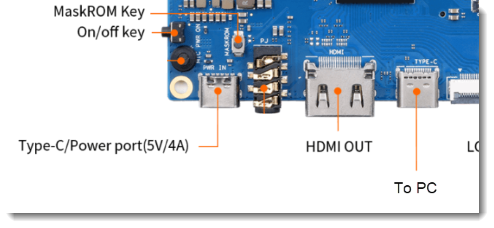

Windows 11 ARM on OPi5¶
This guide describes how to install the latest Windows 11 ARM image on an Orange Pi 5. Keep in mind this is still in development and individual results may vary.
Hardware Requirements¶

-
Note
OPi5 supports ARMv8.2. Windows 11 requires ARMv8.1
As of June 2024, Orange Pi 5 Pro is not supported by this project.
-
USB hub (uni USB C to USB Hub 4 Ports)
Note
USB hub is requires as only the vertical USB-A ports will work for keyboard and mouse. Any USB hub may work, this is just want I had.
-
USB-C to USB-A adapter for hub
-
NVMe drive (such as a SABRENT 1TB Rocket NVMe PCIe M.2 2242)
Note
Must be a NVMe M.2 drive. You may find some NVMe drives do not have driver support. I have found SABENT brand is supported.
There is no driver support for All M.2 SATA drives.
- Enclosure for M.2 PCIe NVMe
- USB keyboard and mouse
Install UEFI firmware to SPI NOR flash¶
Reference Guide (see Flash with Windows PC in section 4, option 2)
Download
-
Download and extract latest version of RKDevTool
-
Download, extract, and install latest version of Rockchip USB driver
-
Download and extract latest release image of EDK2 UEFI firmware for orangepi-5 UEFI
Note
0.9.1 does not support built-in GMAC ethernet, use a newer build.
-
Download latest SPL loader BIN file
Write firmware
-
Open RKDevTool as an Administrator
-
Right-click in a blank space and select Load Config
- Select rock-5b-spinor.cfg
-
Click empty box under … to select file
Note
- Rk3588_spl_loader.bin for Loader
- Orangepi-5_UEFI.img for Image
-
Check Write by Address
- Connect OPi5 from USB-C port to PC
-
Hold down MARKROM button and connect USB-C power, wait a few seconds and release button

-
Status in RKDevTool should change from No Devices Found to Found One MASKROM Device
-
Click Run
-
Process is done when "Download image OK" is displayed in the logging pane.
Note
OPi5 will restarts by itself and exits MASKROM mode
-
Disconnect from PC
Download Drivers¶
Driver download posts are pinned in the #development discord channel
- Download and extract RK3588 signed drivers
- Download updated storage driver (pdb, inf, and sys)
- Add updated drivers to rk3588_drivers ZIP file
Download Windows 11 arm64 release package¶
-
Open uupdump
-
Select arm64 build, I typically choose the latest public release build

-
Select update

-
Choose language and click Next
-
Uncheck Windows Home and click Next
-
Select Download and convert to ISO
-
Click Create download package
-
Extract package to a folder that does not contain spaces in the path. Example: C:\ISO
Generate Windows ISO¶
- Run
uup_download_windows.cmd - Wait for files to be downloaded, processed, and ISO generated. Takes ~60-minutes.
Install Windows onto NVMe Drive¶
-
Download and extract imager
Note
Ignore that it says Raspberry. This was original built for Raspberry Pi devices, but developer has been extended support to Orange Pi devices)
-
Plug the NVMe drive into your PC
- Run
WoR.exeas an Administrator- Set wizard mode = Select show all options
- Select storage device and device type = Raspberry Pi 2/3
- Select ISO image and Windows Pro build
- For drivers, select the downloaded rk3588_drivers-v2.zip file
- For UEFI firmware, leave use the latest firmware. This doesn't really apply to OPi5.
- Leave defaults for configuration
- Click Install
- Wait for the Windows offline install to complete. Takes ~5 minutes
- Click Finish
Windows Setup¶
- Install NVMe drive into the bottom of your OPi5
- Power-on OPi5
-
Wait for Windows to finish setup. Takes 30+ minutes.
Note
System may be slow while .NET Optimization runs
-
Complete the OOBE process
Issues¶
- When booting the loading circle locks up and Windows never loads. After a few power cycles it clears.
Thank you¶
This guide wouldn't have been possible without Mario Bălănică, the developers, and the community that supports the Windows on R project.